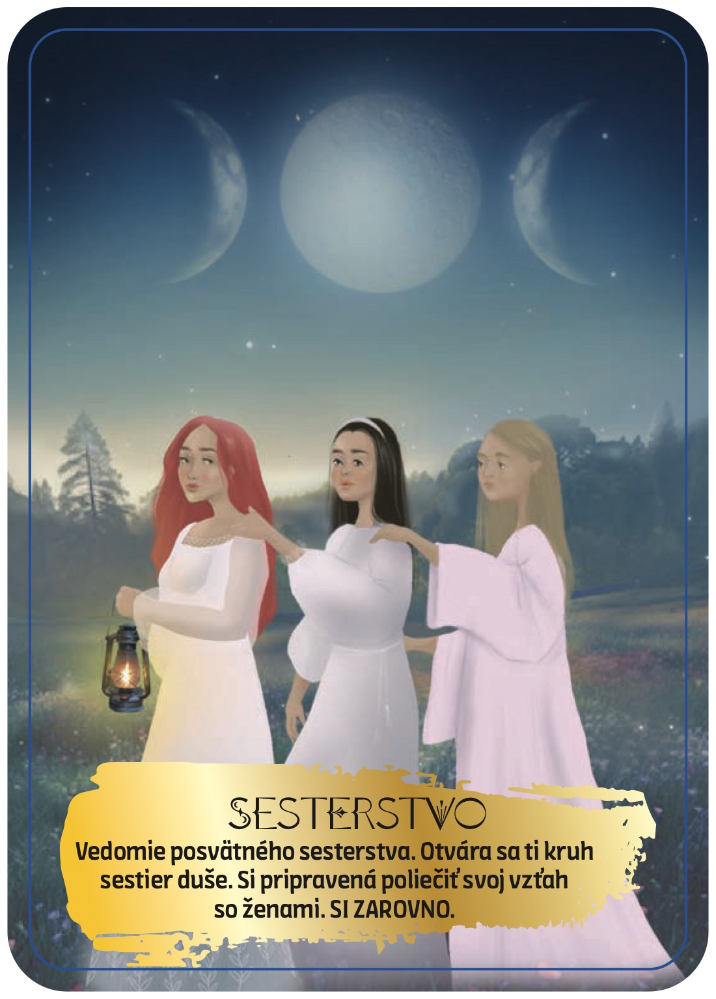
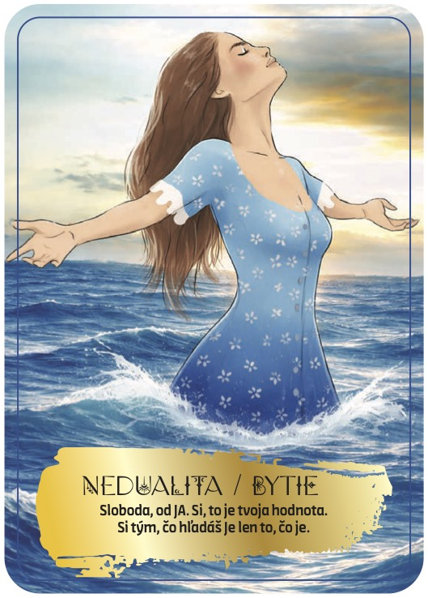
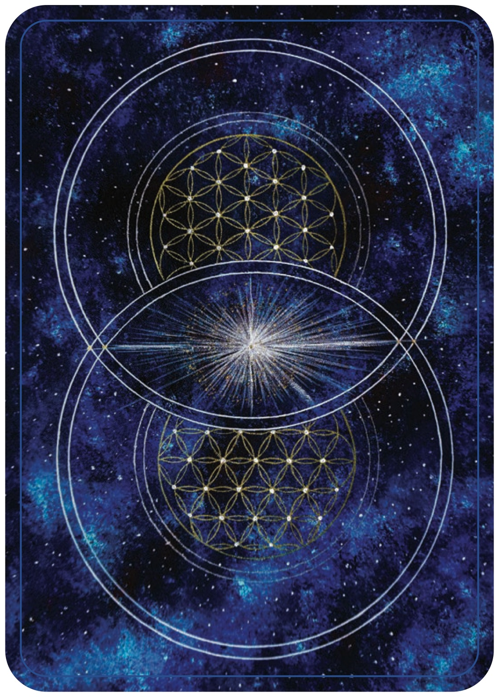

Zastav sa.
Nájdi si pokojné miesto. Nadväzuj sa na svoj vnútorný hlas.
Stíš svet okolo. Vnímaj ten v sebe.
Cesta duše prepája obrazy a slová, ktoré ťa povádzajú k sebaláske, intuícii a vlastnému vnútornému svetu.
55 € kniha + 33 kariet poštovné do SR a ČR v cene


PRIESTOR LEN PRE TEBA
Sú chvíle, keď potrebujeme menej hluku a viac pocitu sami seba.
Cesta duše vznikla zo zámeru podporiť ženy na ceste k vnútornému prijatiu a slobode. Autorské texty Mab Jungy sa tu stretávajú s intuitívnymi ilustráciami Viktórie Šišľanovej – BlondOok.
Každá karta otvára tému. Kniha jej dáva hlbku. A ty si môžeš nechať priestor na to, čo v tebe práve rezonuje.
MALÉ NAHLIADNUTIE DO SADY
Skutočné ilustrácie z kariet.
Klikni a pozri si ich zblízka.
VIAC NEŽ OBRAZ
Sprievodná kniha rozvíja posolstvá kariet cez autorské úvahy, otázky a podnety na zamyslenie. Môžeš sa k nim vracať podlá toho, čo práve rezonuje.
„Nieha samej k sebe.
Objím sa.“Zo karty Sebaláska
CHVÍĽA, KTORÁ PATRÍ TEBE
Nemusíš vedieť vykladať karty. Začni zvedavosťou.
Takto si môžeš vytvoriť vlastnú chvíľu na zamyslenie.
Nájdi si pokojné miesto. Nadväzuj sa na svoj vnútorný hlas.
Nechaj sa osloviť obrazom alebo si jednu vyber náhodne.
Nahliadni do knihy. Zapíš si myšlienku, pocit alebo malý krok, ktorý ťa chce viesť do dňa.

DARUJ SI PRIESTOR PRE SEBA
Kniha a 33 ilustrovaných kariet.
Pre tvoje vlastné chvíle aj ako osobný dar.
Online objednávanie pripravujeme.
MOŽNO SA PÝTAŠ
Sada Cesta duše obsahuje knihu a 33 ilustrovaných kariet. Texty vytvorila Mab Junga, ilustrácie Viktória Šišľanová – BlondOok.
Áno. Cena 55 € zahŕňa poštovné na Slovensko aj do Českej republiky.
Karty môžu použiť ako inšpiráciu na osobné zamyslenie. Pochopte obraz, prečítajte si posolstvo a využite text v knihe.
Karty aj sprievodná kniha sú v slovenčine.
Online objednávanie sa pripravuje. Objednávkový kontakt a spôsob platby budú zverejnené po spustení predaja tejto stránky.